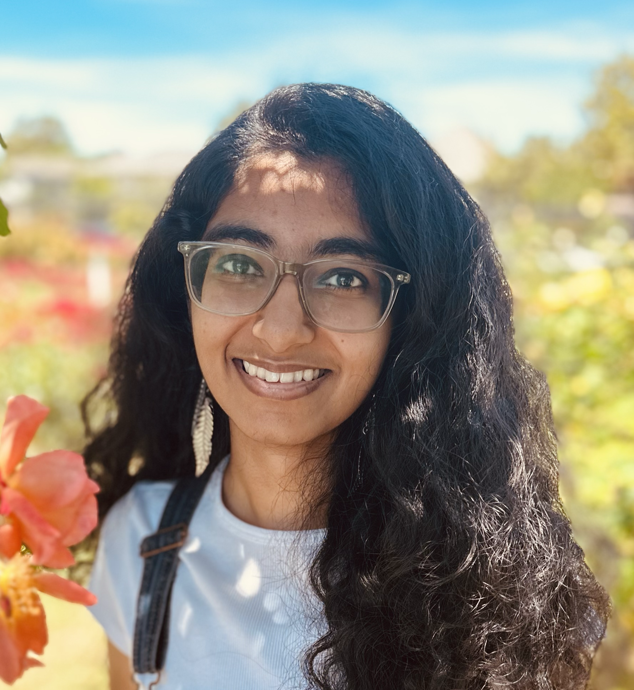

Alligator spotted!
I'm a PhD student at the University of Maryland, College Park, advised by Mohit Iyyer. I was previously at the University of Texas at Austin as an undergrad and affiliate researcher, co-advised by Jessy Li and Greg Durrett.
I like thinking about why large language models aren't diverse or creative enough at open-ended tasks:

Research
Currently
These days, I find myself reading a lot of slop-books and slop-stories, and watching movies as palate cleansers 😓